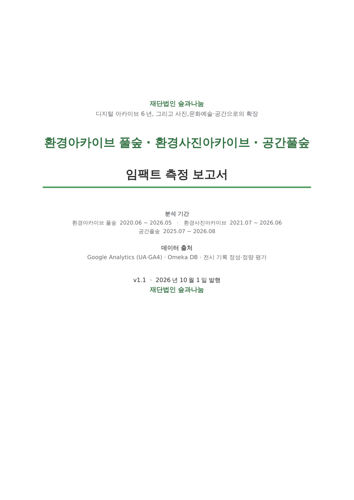

임팩트 측정
임팩트 측정

재단법인 숲과나눔 · 2026년 10월 1일 발행 · v1.0
환경아카이브 풀숲 · 환경사진아카이브 · 공간풀숲
임팩트 측정 보고서
디지털 아카이브 6년, 그리고 사진·공간으로의 확장. 환경아카이브 풀숲 6년의 접속통계, 환경사진아카이브 5년의 이용현황, 공간풀숲 1년의 전시 성과, 전문가 인터뷰, 그리고 Omeka 전수 소장현황 분석을 하나의 임팩트 틀로 종합한 보고서입니다. 이 사이트의 소장현황·컬렉션·키워드 분석은 보고서 Ⅰ장 2절 「소장 기록 현황」의 근거 자료이며, 아래 22개 지표는 보고서 Ⅵ장에서 제안한 것입니다.
Omeka 목록에서 산출한 임팩트 지표
보고서의 다섯 임팩트 영역(학술·지식 생산, 사회·운동사, 정책·제도, 이용자 경험, 조직·운영)에 대응하는 22개 지표입니다. 모두 Omeka 필드에서 직접 산출되며 매년 API로 재산출할 수 있습니다.
A. 학술·지식 생산
| 지표 | 정의·산출 | 값 | Omeka 원천 |
|---|---|---|---|
| A1 원문 제공률 | 파일 또는 임베드가 있는 공개 기록 비율 | 99.4% | files, Preview |
| A2 디지털 원문 분량 | 쪽수 합계(기재분) | 2,244,056쪽 | Size/Quantity |
| A3 메타데이터 완성도 | 제목·설명·키워드·생산자·생산연도·주제·원문 7항목 평균 | 88.6% | 각 필드 |
| A4 맥락 연결 밀도 | 연관 기록·사건·연표·조직 중 1개 이상 | 14.0% | Related * |
| A5 키워드 밀도 / 어휘 규모 | 건당 키워드 수 / 고유 키워드 수 | 3.24개 / 53,218개 | Keyword, tags |
| A6 큐레이션 재소환률 | 전시·칼럼이 인용한 고유 기록 / 공개 기록 | 348건 (0.36%) | exhibits |
| A7 시기 커버리지 | 1990~2000년대 / 1980년대 이전 비중 | 64.2% / 2.4% | Year of Creation |
B. 사회·운동사
| 지표 | 정의·산출 | 값 | Omeka 원천 |
|---|---|---|---|
| B1 운동 네트워크 폭 | 고유 생산자 수 / 기증주체 외부 생산 비율 | 15,048 / 49.6% | Creator vs collection |
| B2 컬렉션 간 교류 | 생산자→기증주체 그래프 | 네트워크 페이지 | Creator, collection |
| B3 의제 발신 기록 비중 | 보도자료·성명서·촉구서·공문 등 | 11,146건 (13.6%) | Format of Records |
| B4 사건별 증거 밀도 | 정보사전-사건 47건 각각의 연결 기록 수 | 환경운동 40년 페이지 | Related Case |
| B5 세대 기록 균형 | ≤1980s / 1990~2000s / 2010s+ | 2.4 / 64.2 / 33.4% | Year of Creation |
| B6 현장 커버리지 | 키워드·태그로 식별된 시도 분포 | 기록 7.5% 식별, 사진 98.6% | Keyword, Filming Location |
C. 정책·제도
| 지표 | 정의·산출 | 값 | Omeka 원천 |
|---|---|---|---|
| C1 공공기관 생산 문서 | 생산자가 행정·공공기관인 기록 | 7,615건 (10.2%) | Creator |
| C2 정책 대응 기록 | 요청서·촉구서·성명서·기자회견문·의견서 | 1,523건 | Format of Records |
| C3 정책 연표 항목 | 연표구분 '정부'·'법원' | 111건 | Classification of Chronology |
D. 이용자 경험
| 지표 | 정의·산출 | 값 | Omeka 원천 |
|---|---|---|---|
| D1 매체 다양성 | 기록유형 분포 | 문서 51% · 간행물 34% · 사진 9% · 영상 3% | Type of Records |
| D2 언어 접근성 | 한국어 외 언어 비중 | 4.2% | Language of Records |
| D3 재이용 준비도 | 라이선스 명시율 | 사진 93.1% / 기록-일반 1.4% | Copyright, Rights |
| D4 이용자 기여 | 오류신고·목록받기 건수 | 미측정 (GA4 이벤트 필요) | Corrections, ?output=csv |
E. 조직·운영
| 지표 | 정의·산출 | 값 | Omeka 원천 |
|---|---|---|---|
| E1 기록 기술 인력 | 기술자 수 / 상위 10명 집중도 | 29명 / 64% | Descriptor |
| E2 기술·등록 활동 추이 | 연도별 등록 건수 | 2020 39.5천 → 2025 58 → 2026 17.9천(일괄) | added, Description Date |
| E3 컬렉션 활성도 | 2020년대 생산 기록 비중 | 숲과나눔 84% ~ 한겨레 0% | Year × collection |
| E4 비공개율 | 비공개 / 등록 | 14.1% (정태석 86.5% ~ 0%) | public |
| E5 원본 형태 | 비전자 : 전자 | 75.3 : 24.7 | Format of Originals |
보완 지표(비-Omeka) Google Scholar·RISS 인용 검색, 논문 공모 응모·수상 편수, 오류신고·목록받기 GA4 이벤트, 접속통계와 결합한 "많이 읽힌 기록"의 프로파일.